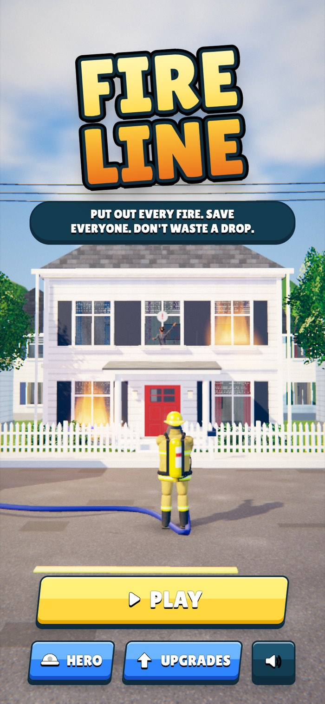
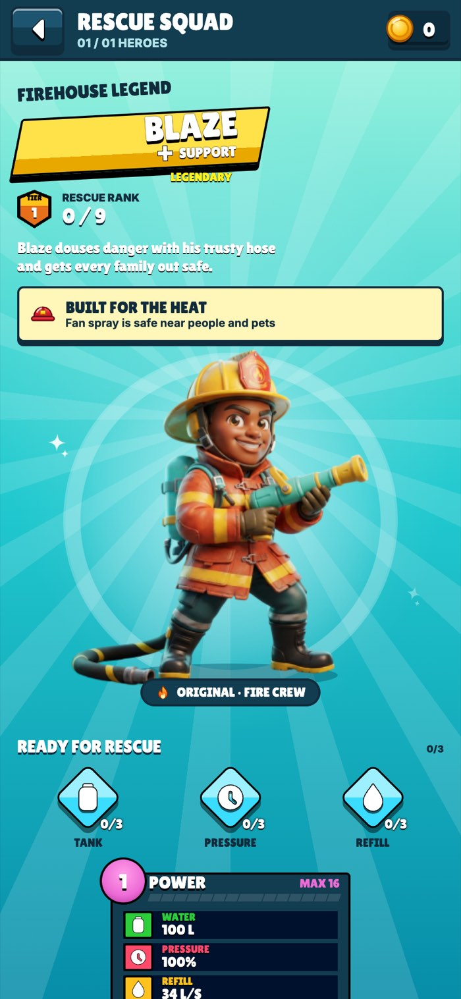
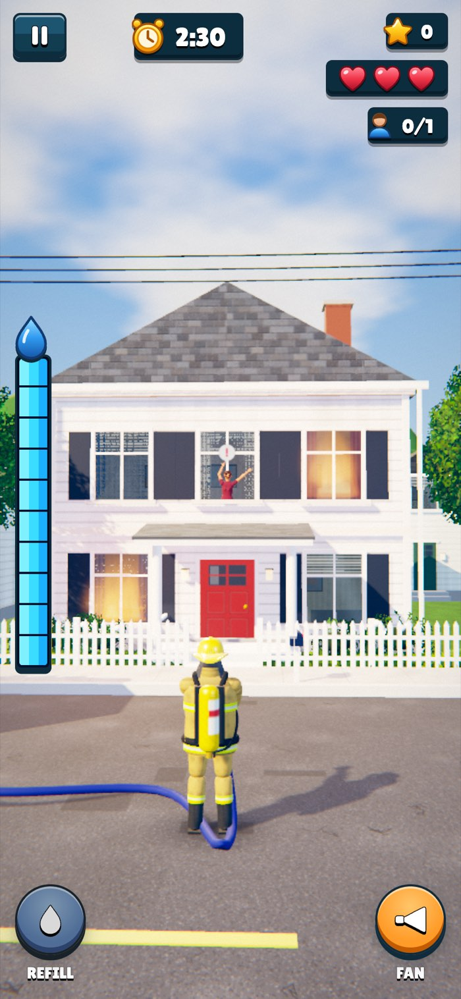

My First Game with AI, Built in Three Hours
Fireline is a light, addictive firefighter game. It was my first game made with AI: Claude connected to Higgsfield and other plugins, with the look designed in Figma.
Problem
Game UI that only lives in Figma never gets tested by a thumb, with a timer running and fire spreading behind it.
Solution
A short, focused game loop: put out every fire, rescue the people inside and don't waste water, in my own Figma design.
Goal
A game people understand in seconds and want to play again.
Role Idea, game design, UI · Tools Figma, Claude, Higgsfield · Platform Browser, phone and desktop
User Research
Who plays Fireline, and what keeps them playing
KPIs
How the design moves the experience: first draft vs. final game
Understood the goal in 10s
Finished level 1
Played another round
Share of players. “Final game” numbers are the targets I set for the design.
Where the idea came from
I wanted to learn how to build a game with AI, so I connected Claude to Higgsfield and a few more plugins, and designed the look in Figma.
The game itself was my own idea: something light and simple, quick to understand and hard to put down.
Process & Decisions
- Water as the main resource: every shot is a small decision
- Two nozzles: a safe wide spray and a strong jet
- A HUD you can read at a glance, even with fire behind it
- Stars, coins and upgrades as a reason to replay
How I thought it through
What I saw
Game UI that only lives in Figma
Counters that vanish behind fire
Only three hours to build
What users said
“What am I supposed to do?”
“Just one more round”
“Why did I lose?”
Ideas
A water tank that drains
Stars for every level
Upgrades bought with coins
What I chose
One core loop, done well
8 levels, each with one new twist
Navy HUD pills with hard outlines
Fireline in 13 seconds
A playable build in about three hours: eight fire calls, five upgrades, a hero screen and a full HUD.



Visual language
Teal spotlight backgrounds, navy panels with a hard ink outline, slanted yellow name plates and Lilita One in white caps.
What I took away
A time box sharpens decisions. Three hours forced one clear core loop.
Game UI works under pressure. Contrast and hard outlines matter even more here.
Playable beats perfect. A short build says more than any static frame.